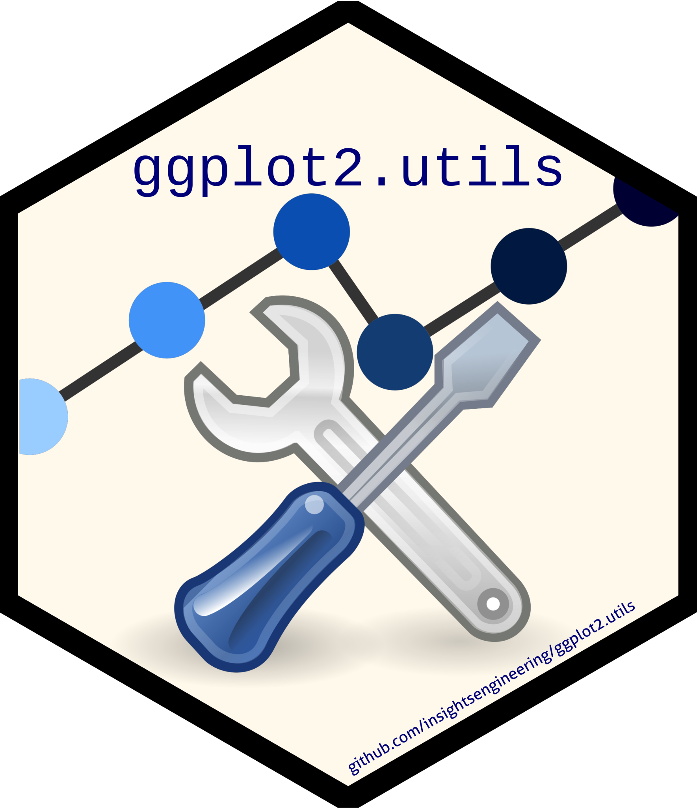

Package index
-
ggplot2.utilsggplot2.utils-package ggplot2.utilsPackage
-
geom_tablegeom_table_npcexperimental - Inset tables
-
geom_km()experimental - Add a Kaplan-Meier Survival Curve
-
geom_km_ticks()experimental - Add Tick Marks to a Kaplan-Meier Survival Curve
-
stat_n_textexperimental - Add Text Indicating the Sample Size to a ggplot2 Plot
-
stat_km()experimental - Adds a Kaplan-Meier Estimate of Survival Statistic
-
stat_km_ticks()experimental - Adds Tick Marks to a Kaplan-Meier Estimate of Survival Statistic
-
ttheme_gtdefaultttheme_gtbwttheme_gtdarkttheme_gtlightttheme_gtminimalttheme_gtplainttheme_gtsimplettheme_gtstripesexperimental - Table themes
-
ttheme_setexperimental - Set default table theme